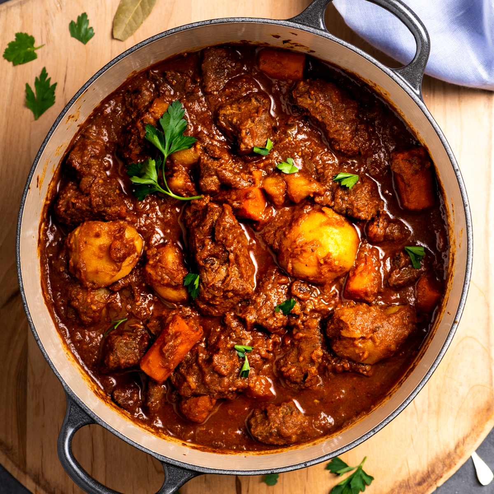

A hearty beef stew made with love
From flavours of the fresh garden to the taste of a hearty warm tender meat. This beef stew is a representation of a sunday meal that will make a family gathering the best part. great for all occassions as well.
Ingredients
- Beef
- Onions
- Pepper
- Carrot
- Potatoes
- Garlic
Steps
- Prepare onions, pepper and garlic
- Put oil in the pot, make sure it just to greace the base of the pot
- Put the onions in the warming oils
- Leave for 2 mins, thereafter add garlic and papper
- Let it simmer for another 3-5 minutes